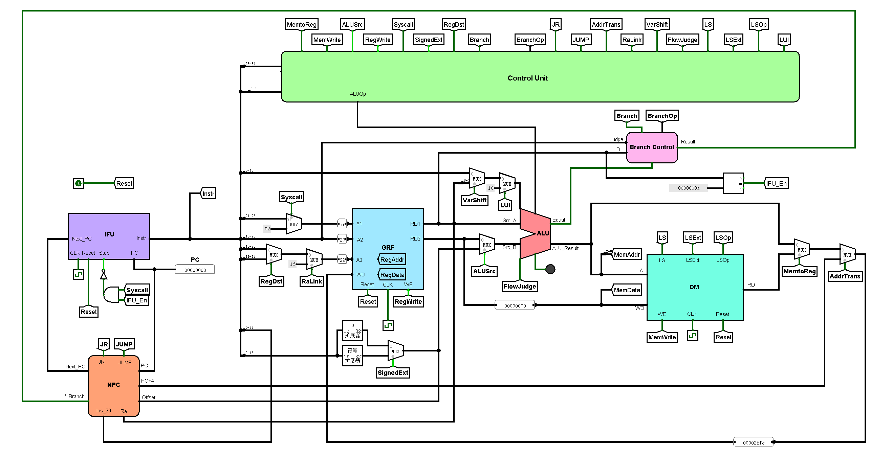

单周期CPU设计方案
设计概述
本文所设计的CPU为Verilog实现的单周期MIPS架构CPU，该CPU支持43条MIPS汇编指令，为了实现该功能，笔者设计了IFU，GRF，NPC，ALU，DM，Controler，Branch Control等关键模块。整个搭建过程通过自下而上的方式完成——先根据应实现的指令对功能部件进行设计与搭建，然后对各个功能部件进行连接，形成完整的数据通路。

实现指令说明
本CPU支持43条指令，包括19条R型指令，2条J型指令，22条I型指令。
R型指令
- 算数/位运算指令：add, addu, sub, subu, and, or, nor, xor
- 移位指令：sll, srl, sra, sllv, srlv, srav
- 置位指令：slt, sltu
- 跳转指令：jr, jalr
J型指令
- 跳转指令：j, jal
I型指令
- 算数/位运算指令： addi, andi, addiu, ori, xori, lui
- B类指令：beq, bne, bgtz, bgez, blez, bltz
- 置位指令：slti, sltiu
- 访存指令：lw, sw, lh, lhu, lb, lbu, sh, sb
数据通路模块定义
IFU（取指令单元）
该模块内部包含PC（程序计数器）和IM（指令存储器容量为32*1024 bit）。可以根据PC的值从IM取出对应的指令，并具有同步复位的功能。
-
端口定义
信号名 方向 位宽 描述 clk I 1 时钟信号 reset I 1 同步复位信号 stop I 1 停止信号 next_pc I 32 下一条要被执行的指令的地址 pc O 32 输出当前正在执行的指令的地址 instr O 32 输出当前正在执行的指令 -
功能定义
序号 功能名称 功能描述 1 复位 当reset信号有效时，将PC寄存器中的值置为0x00000000 2 停止 当stop信号有效时，PC寄存器忽略时钟输入，PC当前值保持不变 3 写PC寄存器 当stop信号失效且时钟上升沿来临时，将下一条指令的地址（next_pc）写入PC寄存器 4 取指令 根据当前PC的值从IM（指令存储器）中读出对应的指令到instr端口
GRF（通用寄存器组）
该模块内部包含32个具有写使能32位寄存器，分别对应MIPS架构中$0 ~ $31通用寄存器（其中0号寄存器中的值恒为0，即不具备写使能）。GRF可以实现异步复位，同时可以根据输入的5位地址（0~31）向寄存器堆存取数据，实现定向访存寄存器。
-
端口定义
信号名 方向 位宽 描述 clk I 1 时钟信号 pc I 1 当前指令地址 reset I 1 同步复位信号 1：复位信号有效 0：复位信号无效 read_addr_1 I 5 地址输入信号，指定32个寄存器中的一个，将其中的数据读出到RD1 read_addr_2 I 5 地址输入信号，指定32个寄存器中的一个，将其中的数据读出到RD2 write_addr I 5 地址输入信号，指定32个寄存器中的一个，将其作为写入目标 write_data I 32 数据输入信号 RegWrite I 1 写使能信号 1：写入有效 0：写入失效 read_data_1 O 32 输出A1指定的寄存器中的32位数据 read_data_2 O 32 输出A2指定的寄存器中的32位数据 -
功能定义
序号 功能名称 功能描述 1 复位 reset信号有效时，所有寄存器中储存的值均被清零 2 读数据 读出read_addr_1，read_addr_2地址对应的寄存器中储存的数据，将其加载到read_data_1和read_data_2 3 写数据 当RegWrite信号有效且时钟上升沿来临时，将write_data中的数据写入到write_addr地址对应的寄存器
NPC（下一指令计算单元）
该模块根据当前指令地址和控制信号，计算出下一指令所在的地址。
-
端口定义
信号名 方向 位宽 描述 pc I 32 当前指令地址 offset I 32 地址偏移量，用于计算B类指令所要跳转的地址 instr_26 I 26 当前指令数据的前26位（0~25），用于计算jal和j指令所要跳转的地址 ra_data I 32 储存在寄存器（$ra或是jalr指令中存储“PC+4”的寄存器）中的地址数据，用于实现jr和jalr指令 branch_judge I 1 B类指令分支条件判断结果 1：B类指令分支条件成立 0：B类指令分支条件不成立 NPCOp I 3 对输出next_pc的值进行选择 0b000:next_pc为pc+4 0b001:next_pc为分支的地址 0b010:next_pc为j型指令的跳转地址 0b011:next_pc为寄存器中保存的地址 next_pc O 32 输出下一指令地址 pc+4 O 32 输出pc+4的值，用于实现jal和jalr指令中的地址存储
ALU（逻辑运算单元）
该模块可实现加，减，按位与，按位或等11种运算，并根据ALUOP信号的值在这些功能中进行选择。除此之外，该模块还可以实现溢出判断。
- 端口定义
信号名 方向 位宽 描述 ALUOp I 4 ALU功能选择信号 src_A I 32 参与ALU计算的第一个值 src_B I 32 参与ALU计算的第二个值 shamt I 5 移位数输入 FlowJudge I 1 溢出判断信号 1：进行溢出判断 0：不进行溢出判断 equal O 1 相等判断信号 1：src_A和src_B相等 0：src_A和src_B不相等 ALU_result O 32 输出ALU计算结果 flow_result O 1 输出ALU计算结果的溢出情况（add，sub，addi等指令有效） - 功能定义
序号 功能名称 ALU_Op 功能描述 1 加 0b0000 ALU_result = src_A + src_B 2 减 0b0001 ALU_result = src_A - src_B 3 按位与 0b0010 ALU_result = src_A & src_B 4 按位或 0b0011 ALU_result = src_A | src_B 5 按位异或 0b0100 ALU_result = src_A ⊕ src_B 6 按位或非 0b0101 ALU_result = ~(src_A | src_B) 7 逻辑左移 0b0110 ALU_result = src_B << shamt 8 逻辑右移 0b0111 ALU_result = src_B >> shamt 9 算术右移 0b1000 ALU_result = src_B >>> shamt 10 带符号比较 0b1001 ALU_result = (src_A > src_B) ? 1 : 0（带符号比较） 11 无符号比较 0b1010 ALU_result = (src_A > src_B) ? 1 : 0（无符号比较）
DM （数据存储器）
该模块可以实现对数据的存储与访问（包括对字、半字、字节的各种访存操作），还可以实现同步复位。
- 端口定义
信号名 方向 位宽 描述 pc I 32 当前指令的地址 clk I 1 时钟信号 reset I 1 同步复位信号 MemWrite I 1 储存器写入使能信号 1：写入有效 0：写入失效 addr I 32 储存器写入地址 write_data I 32 储存器写入数据 LSOp I 3 访存功能选择
0b000:lw
0b001:sw
0b010:lh
0b011:lhu
0b100:sh
0b101:lb
0b110:lbu
0b111:sbread_data O 32 储存器读出数据
Branch Control（B类指令控制模块）
该模块跟据当前所执行的分支指令类型进行相应判断，并将判断结果输出。
- 端口定义
cmp_data I 32 输入32位数据，用于和0进行比较（实现blez，bgez，bltz，bgtz） equal I 1 相等判断信号，即ALU模块中Src_A和Src_B的比较结果（实现beq，bne） BranchOp I 3 B类指令选择指令 0b000：beq指令 0b001：bgez，bltz 0b010：bgtz 0b011：blez 0b100：bne judge I 1 区别bgez，bltz两个指令 result O 1 输出判断结果 1：B类指令转移条件成立 0：B类指令转移条件不成立
控制模块定义
在控制模块中，我们对指令中Opcode域和Funct域中的数据进行解码，输出ALUOp,MemtoReg等15条控制指令，从而对数据通路进行调整，满足不同指令的需求。为实现该模块，我们又在内部设计了两个子模块——和逻辑（AND Logic）和或逻辑（OR Logic）。前者的功能是识别，将输入的Opcode和Funct数据识别为对应的指令，后者的功能是生成，根据输入指令的不同产生不同的控制信号。
-
控制信号定义
序号 信号名 位宽 描述 触发指令（信号为1） 1 MemToReg 1 GRF中WD接口输入数据选择 2 MemWrite 1 DM写入使能信号 3 ALUSrc 1 ALU中Src_B接口输入数据选择 4 RegWrite 1 GRF写入使能信号 5 SYSCALL 1 syscall指令译码信号，GRF中A1接口输入数据选择 6 SignedExt 1 立即数符号扩展选择 7 RegDst 1 GRF中A3接口输入数据选择 8 AddrToReg 1 指令地址传递信号，选择是否将PC+4输入到GRF的WD端口 9 RaLink 1 $ra寄存器写入选择信号，选择是否将$ra作为GRF的写入对象 10 VarShift 1 可变移位选择信号，选择是否将指令rs域的五位数据写入ALU的Shift接口 11 FlowJudge 1 溢出判断选择信号 12 BranchOp 3 B类指令选择信号 13 LSOp 3 访存操作选择信号 14 NPCOp 3 next_pc输出选择信号 15 ALUOp 4 ALU功能选择信号 -
生成代码
assign MemToReg = _lw | _lh | _lhu | _lb | _lbu; assign MemWrite = _sw | _sh | _sb; assign ALUSrc = _addi | _addiu | _andi | _ori | _xori | _slti | _sltiu | _lw | _sw | _lh | _lhu | _sh | _lb | _lbu | _sb | _lui; assign RegWrite = _sll | _sra | _srl | _add | _addu | _sub | _and | _or | _nor | _slt | _sltu | _jalr | _xor | _sllv | _srav | _srlv | _subu | _jal | _addi | _addiu | _andi | _ori | _xori | _slti | _sltiu | _lw | _lh | _lhu | _lb | _lbu | _lui; assign SYSCALL = _syscall; assign SignedExt = _addi | _addiu | _slti | _sltiu | _lw | _sw | _lh | _lhu | _sh | _lb | _lbu | _sb; assign RegDst = _sll | _sra | _srl | _add | _addu | _sub | _and | _or | _nor | _slt | _sltu | _jalr | _xor | _sllv | _srav | _srlv | _subu; assign AddrToReg = _jalr | _jal; assign RaLink = _jal; assign VarShift = _sllv | _srav | _srlv; assign FlowJudge = _add | _sub | _addi; assign NPCOp[2] = 1'b0; assign NPCOp[1] = _jalr | _jr | _j | _jal; assign NPCOp[0] = _jalr | _jr | _beq | _bne | _bgez | _bgtz | _blez | _bltz; assign BranchOp[2] = _bne; assign BranchOp[1] = _bgtz | _blez; assign BranchOp[0] = _bgez | _blez | _bltz; assign LSOp[2] = _sh | _lb | _lbu | _sb; assign LSOp[1] = _lh | _lhu | _lbu | _sb; assign LSOp[0] = _sw | _lhu | _lb | _sb; assign ALUOp[3] = _sra | _slt | _sltu | _srav | _slti | _sltiu | _lui; assign ALUOp[2] = _sll | _srl | _nor | _xor | _sllv | _srlv | _xori; assign ALUOp[1] = _sll | _srl | _and | _or | _sltu | _sllv | _srlv | _andi | _ori | _sltiu | _lui; assign ALUOp[0] = _srl | _sub | _or | _nor | _slt | _srlv | _subu | _ori | _slti | _lui;
重要机制实现方法
转移指令（B类和J类）实现方法
转移指令包括两种——B类和J类，这两类指令的地址转移功能均需要通过NPC的选择与计算将对应的PC地址传入PC寄存器（IFU模块中）。B类指令数量更多，转移条件的判断也更为复杂，因此我们将其封装成一个模块——BranchControl。该模块的接口定义已经给出，现在分析其内部实现逻辑。
always @(*) begin
case (BranchOp)
`BRANCH_BEQ: result = equal;
`BRANCH_BNE: result = ~equal;
`BRANCH_BGEZ_OR_BLEZ: result = (judge == 0) ? ($signed(cmp_data) < 0) : ($signed(cmp_data) >= 0);
`BRANCH_BGTZ: result = ($signed(cmp_data) > 0);
`BRANCH_BLEZ: result = ($signed(cmp_data) <= 0);
default: result = 1'b0;
endcase
end
-
据判断逻辑不同，B类指令又可以分为两类——bne，beq和bltz，blez，bgtz，bgez。bne和beq指令需要将两个操作数进行比较，根据两者的值是否相等进一步判断是否执行跳转。“Equal”接口的信号正是两个操作数的比较结果。而bltz，blez，bgtz，bgez四个指令只需要将一个操作数和0进行比较。我们将这个操作数的值直接传入该模块，然后用四个比较器分别计算这四个指令的判断结果。
-
6个B类指令的判断结果已经得到，下面我们要做的是根据当前指令选择出其中一个判断结果进行输出，这就需要通过“BranchOp”（B类指令选择信号）进行选择
BranchOp 对应指令 0b000 beq 0b001 bgez，bltz 0b010 bgtz 0b011 blez 0b100 bne -
由上表可以发现，当“BranchOp”的值为0b001时，对应的指令有两个——bgez和bltz。原因是根据MIPS指令集，bgez和bgtz的Opcode完全一致（000001），无法仅通过Control Unit将这两个指令进行区分。因此，我们需要将指令的16~20位数据输入该模块（在该数据段中bgez指令的值为0b00001，bltz的值为0b00000），即“Judge”信号，将这两个指令的判断结果区分。这样分支指令的判断结果就可以得出，并传入NPC中。
下面我们介绍NPC中B类和J类指令的执行逻辑。
wire [31:0] npc_1 = pc + 32'd4;
wire [31:0] npc_2 = pc + 32'd4 + (offset << 2);
wire [31:0] npc_3 = {pc[31:28], instr_26, 2'b00};
wire [31:0] npc_4 = ra_data;、、
assign pc_plus_4 = npc_1;
always @(*) begin
case (NPCOp)
`NPC_PC_PLUS_FOUR: next_pc = npc_1;
`NPC_BRANCH: next_pc = (branch_judge) ? npc_2 : npc_1;
`NPC_INSTR_26: next_pc = npc_3;
`NPC_RA_DATA: next_pc = npc_4;
default: next_pc = next_pc;
endcase
end
- 我们需要先将输入的数据进行处理，转换为PC地址，包括对“Offset”（B类指令码中的地址偏移量）和“Instruction[25:0]”（j和jal指令码中储存地址的数据段）进行处理。然后通过“branch_jdudge”信号（Branch Control模块输出的结果）和“NPCOp”信号对之前得到的计算结果进行选择，最终将选择后的结果通过“next_pc”端口输出。
- 此外，由于jal和jalr指令中需要将PC+4的值写入到某个寄存器中，因此需要将PC+4的值计算出来通过“PC+4”接口输出。在写入过程中，控制信号“RaLink”和“AddrTrans”起到了调节数据通路的作用。
访存指令实现方法
访存指令包含8个——lw，sw，lb，lbu，lh，lhu，sb，sh，均在DM模块中实现。由于我们的程序中DM为按字地址存储，所以我们无法直接对字节和半字进行操作，需要进行位的拼接。读储存器代码如下：
wire [31:0] temp = data_memory[addr[11:2]]; //get the whole word
always @(*) begin
case(LSOp)
`LS_LW: read_data = temp;
`LS_LH: read_data = (addr[1] == 1'b0) ? {{16{temp[15]}}, temp[15:0]}
: {{16{temp[31]}}, temp[31:16]};
`LS_LHU: read_data = (addr[1] == 1'b0) ? {{16{1'b0}}, temp[15:0]}
: {{16{1'b0}}, temp[31:16]};
`LS_LB: read_data = (addr[1:0] == 2'b00) ? {{24{temp[7]}}, temp[7:0]} :
(addr[1:0] == 2'b01) ? {{24{temp[15]}}, temp[15:8]} :
(addr[1:0] == 2'b10) ? {{24{temp[23]}}, temp[23:16]}:
{{24{temp[31]}}, temp[31:24]};
`LS_LBU: read_data = (addr[1:0] == 2'b00) ? {{24{1'b0}}, temp[7:0]} :
(addr[1:0] == 2'b01) ? {{24{1'b0}}, temp[15:8]} :
(addr[1:0] == 2'b10) ? {{24{1'b0}}, temp[23:16]}:
{{24{1'b0}}, temp[31:24]};
default: read_data = temp;
endcase
end
写储存器代码如下：
always @(posedge clk) begin
if(reset) begin
for(i = 0; i < 1024; i = i + 1) begin
data_memory[i] <= 32'h0;
end
end
else if(MemWrite == 1) begin
case(LSOp)
`LS_SW: data_memory[addr[11:2]] <= write_data;
`LS_SH: data_memory[addr[11:2]] <=
(addr[1] == 1'b0) ? {temp[31:16], write_data[15:0]} :
{write_data[15:0], temp[15:0]};
`LS_SB: data_memory[addr[11:2]] <=
(addr[1:0] == 2'b00) ? {temp[31:8], write_data[7:0]} :
(addr[1:0] == 2'b01) ? {temp[31:16], write_data[7:0], temp[7:0]} :
(addr[1:0] == 2'b10) ? {temp[31:24], write_data[7:0], temp[15:0]}:
{write_data[7:0], temp[23:0]};
default: data_memory[addr[11:2]] <= data_memory[addr[11:2]];
endcase
else data_memory[addr[11:2]] <= data_memory[addr[11:2]];
endmodule测试方案
典型测试样例
运算指令测试
该部分测试通过随机数随机生成，以保证测试数据的任意性，然后与同学代码进行对拍，以确定正确性。（随机生成程序与对拍程序均由同学设计）
其中一组测试数据如下所示
li $0 -5646112
li $1 123555
……………………
xor $19, $3, $1
addu $22, $14, $28
nor $8, $17, $29
addu $19, $8, $4
srlv $3, $11, $16
sub $1, $20, $10
add $15, $25, $6
nor $18, $24, $12
or $25, $27, $18
and $4, $30, $4
or $24, $10, $5
or $23, $14, $22
and $21, $24, $29
or $7, $13, $21
sllv $24, $25, $19
xor $16, $31, $7
srlv $16, $5, $1
or $23, $7, $17
and $30, $16, $25
sltu $0, $4, $14
addu $1, $10, $30
sllv $31, $10, $12
srav $1, $10, $25
xor $20, $15, $9
sltu $23, $8, $24
and $17, $22, $0
xor $7, $24, $4
slt $20, $13, $17
xor $7, $3, $21
srav $12, $29, $11
addu $1, $27, $16
sltu $16, $2, $29
subu $15, $11, $21
srav $27, $10, $2
add $18, $31, $24
sltu $22, $6, $31
srlv $3, $28, $0
or $10, $4, $6
sllv $30, $15, $26
add $1, $19, $18
srlv $15, $28, $13
or $25, $10, $31
add $2, $13, $2
and $1, $24, $26
addu $19, $23, $20
xor $30, $3, $28
xor $14, $27, $28
and $4, $16, $25
nor $26, $23, $4
add $4, $11, $29
srlv $30, $3, $2
add $11, $28, $27
sltu $6, $28, $23
……………………转移指令（B类和J类）测试
main:
li $s0, 0
li $s1, -1000
li $s2, 1000
lui $s3, 0x8000 #s3 is -2147483648
lui $s4, 0x8000
ori $s4, 0x0001 #s4 is -2147483647
lui $s5, 0x7fff
ori $s5, 0xffff #s5 is 2147483647
lui $s6, 0x7fff
ori $s6, 0xfffe #s6 is 2147483646
beq_1: beq $s0, $s0, beq_1_test
beq_2: beq $s1, $s1, beq_2_test
……
beq_10: beq $s5, $s6, beq_10_test
beq_end:
bne_1: bne $s0, $s1, bne_1_test
……
bne_10: bne $s3, $s3, bne_10_test
bne_end:
blez_1: blez $s0, blez_1_test
……
blez_10: blez $s6, blez_10_test
blez_end:
bgtz_1: bgtz $s2,bgtz_1_test
……
bgtz_10: bgtz $s1,bgtz_10_test
bgtz_end:
jal_1: jal jal_1_test
……
jal_5: jal jal_5_test
jal_end:
jalr_1: or $v0, $0, 12916
jalr $v1, $v0
……
jalr_5: or $v0, $0, 12948
jalr $v1, $v0
sw $t0, 0($s0)
sw $t1, 0($s0)
sw $t2, 0($s0)
sw $t3, 0($s0)
sw $t4, 0($s0)
sw $t5, 0($s0)
li $v0, 10
syscall
beq_1_test: addi $t0,$t0, 1
j beq_2
……
beq_10_test: addi $t0,$t0, 1
j beq_end
bne_1_test: addi $t1,$t1, 1
j bne_2
……
bne_10_test:addi $t1,$t1, 1
j bne_end
blez_1_test: addi $t2,$t2, 1
j blez_2
……
blez_10_test: addi $t2,$t2, 1
j blez_end
bgtz_1_test: addi $t3,$t3 1
j bgtz_2
……
bgtz_10_test: addi $t3,$t3 1
j bgtz_end
jal_1_test: addi $t4, $4, 1
jr $ra
……
jal_5_test: addi $t4, $4, 1
jr $ra
jalr_1_test: addi $t5, $t5, 1
jr $v1
……
jalr_5_test: addi $t5, $t5, 1
jr $v1
访存指令测试
.text
li $s0, 0xABCF1234
li $s1, 0x1234ABCD
li $s2, 0xa1b2c3d4
li $s3, 0x7fff0000
sb $s1, 100($0)
sb $s2, 103($0)
sb $s3, 105($0)
sb $s4, 107($0)
sh $s4, 108($0)
sh $s3, 110($0)
sh $s2, 112($0)
sh $s1, 114($0)
sw $s0, 0($0)
sw $s1, 4($0)
sw $s2, 8($0)
sw $s3, 12($0)
lw $t0, 0($0)
lw $t1, 4($0)
lw $t2, 8($0)
lw $t3, 12($0)
sw $t0, 16($0)
sw $t1, 20($0)
sw $t2, 24($0)
sw $t3, 28($0)
lb $t0, 3($0)
lb $t1, 7($0)
lb $t2, 11($0)
lb $t3, 13($0)
sw $t0, 32($0)
sw $t1, 36($0)
sw $t2, 40($0)
sw $t3, 44($0)
lbu $t0, 3($0)
lbu $t1, 7($0)
lbu $t2, 11($0)
lbu $t3, 13($0)
sw $t0, 48($0)
sw $t1, 52($0)
sw $t2, 56($0)
sw $t3, 60($0)
lh $t0, 2($0)
lh $t0, 4($0)
lh $t0, 8($0)
lh $t0, 12($0)
sw $t0, 64($0)
sw $t1, 68($0)
sw $t2, 72($0)
sw $t3, 76($0)
lhu $t0, 2($0)
lhu $t0, 6($0)
lhu $t0, 8($0)
lhu $t0, 12($0)
sw $t0, 80($0)
sw $t1, 84($0)
sw $t2, 88($0)
sw $t3, 92($0)
li $v0, 10
syscall自动测试工具
我们通过python程序将MIPS汇编程序（test.asm）编译并运行，形成16进制机器码（code.txt）和标准输出（mips_out.txt）。然后命令行运行ise，得到工程文件的输出（verilog_out.txt）.然后我们对两个输出文件进行比较，得出比较结果。若出现不同，还会输出错误日志文件（log_i.txt）。
import os
p_road = "D:\\Code\\Verilog\\homework_code\\P4_cpu_test"
run_time = "200us"
xilinx_path = "E:\\Xilinx\\14.7\\ISE_DS\\ISE"
error = []
def run_mars():
os.system("java -jar mars.jar mc CompactDataAtZero a dump .text HexText code.txt nc mips_code.asm")
os.system("java -jar mars.jar mc CompactDataAtZero nc mips_code.asm > mips_out.txt")
def load_hex_code():
list_temp = []
with open("code.txt", "r+") as hex_code:
list_temp = hex_code.readlines()
with open(p_road + "\\code.txt", "w") as file_to_IM:
file_to_IM.writelines(list_temp)
hex_code.close()
file_to_IM.close()
def run_ise():
file_list = []
for i, j ,k in os.walk(p_road):
for file in k:
if file.endswith(".v"):
file_list.append(file)
with open(p_road + "\\mips.prj", "w") as prj:
for i in range(len(file_list)):
prj.write("Verilog work \"" + p_road + "\\" + file_list[i] + "\"\n")
with open(p_road + "\mips.tcl", "w") as tcl:
tcl.write("run " + run_time +";\nexit")
prj.close()
tcl.close()
os.environ["XILINX"] = xilinx_path
os.system(xilinx_path + "\\bin\\nt64\\fuse -nodebug -prj " + p_road + "\\mips.prj -o mips.exe mips_tb > compile_log.txt")
os.system("mips.exe -nolog -tclbatch " + p_road + "\\mips.tcl> verilog_out.txt")
# print("mips.exe -nolog -tclbatch " + p_road + "\\mips.tcl > verilog_out.txt")
def copy_file(name, target_road):
f_1 = open(name, "r")
list_temp = f_1.readlines()
f_2 = open(target_road + "\\" + name, "w")
f_2.writelines(list_temp)
f_1.close()
f_2.close()
def file_cmp(test_order):
with open("mips_out.txt", "r") as out_1:
out_std = out_1.readlines()
out_std.remove('\n')
with open("verilog_out.txt", "r+") as out_2:
out_test = out_2.readlines()[5:]
out_2 = out_2.readlines()[5:]
with open(".\\log.txt".format(test_order), "w") as log:
flag = 0
if(len(out_std) > len(out_test)):
flag = 1;
else:
for i in range(len(out_std)):
if(out_std[i] != out_test[i]):
flag = 1;
log.write("error in line {}\n expected output is {}\nyour outout is {}\n\n".format(i, out_std[i], out_test[i]))
if(flag):
print("Wrong Answer!")
os.makedirs(".\\test_log_file\\log_{}\\".format(i))
copy_file("log.txt", ".\\test_log_file\\log_{}".format(i))
copy_file("mips_code.asm", ".\\test_log_file\\log_{}".format(i))
copy_file("mips_out.txt", ".\\test_log_file\\log_{}".format(i))
copy_file("verilog_out.txt", ".\\test_log_file\\log_{}".format(i))
else:
print("Accepted!")
#### main
test_times =int(input())
for i in range(test_times):
os.system("python D:\大学资料\大二上\计算机组成\实验上机\P4\自动化测试\code_generate.py")
print("\n{}/{}".format(i+1, test_times))
run_mars()
load_hex_code()
run_ise()
file_cmp(i+1)
思考题
-
Q：根据你的理解，在下面给出的DM的输入示例中，地址信号addr位数为什么是[11:2]而不是[9:0]？这个addr信号又是从哪里来的？
A：因为MIPS架构cpu的指令存储器是按字节寻址，而我们在Verilog中构建的IM是按字寻址的，而且地址尾款为10位（[0:1024]）。因此应该对pc[9:0]进行左移2位的操作，相当于取pc[11:2].addr信号是来源于pc -
Q：思考Verilog语言设计控制器的译码方式，给出代码示例，并尝试对比各方式的优劣。
A：可以记录下 指令对应的控制信号如何取值，也可以记录下控制信号每种取值所对应的指令。如以下代码——//第一种方式 always @(*)begin if(_add == 1)begin Regwrite = 1; RegDst = 1; end else if(sub == 1) begin Regwrite = 1; RegDst = 1; ……………… end //第二种方式 assign MemToReg = _lw | _lh | _lhu | _lb | _lbu; assign MemWrite = _sw | _sh | _sb; -
Q：在相应的部件中，reset的优先级比其他控制信号（不包括clk信号）都要高，且相应的设计都是同步复位。清零信号reset所驱动的部件具有什么共同特点
A：都具有寄存器类型，可以对数据进行存储，在运行中可读可写，如pc，DM，GRF。 -
Q：C语言是一种弱类型程序设计语言。C语言中不对计算结果溢出进行处理，这意味着C语言要求程序员必须很清楚计算结果是否会导致溢出。因此，如果仅仅支持C语言，MIPS指令的所有计算指令均可以忽略溢出。 请说明为什么在忽略溢出的前提下，addi与addiu是等价的，add与addu是等价的。提示：阅读《MIPS32® Architecture For Programmers Volume II: The MIPS32® Instruction Set》中相关指令的Operation部分 。
A：英文指令集中，对于ADD的解释是: ADDU performs the same arithmetic operation but does not trap on overflow,也就是说，add和addu仅有溢出检测的区别。在忽略溢出的条件下，无论是否溢出，二者都将计算结果存入rd中，因此二者是等价的。Addi和addiu同理。 -
Q：根据自己的设计说明单周期处理器的优缺点。
A：单周期的CPU会在一个时钟周期内完成所有的工作，既从指令取出，到得到结果，全部在一个时钟之内完成。优点是设计较为简单，指令与指令之间独立，缺点是cpu的时钟周期受关键路径限制，时钟周期较长，效率比较低。